SPECIFICATIONS
The braking system is the power assisted hydraulic type, comprising two crossover, independent ciruits (each circuit acting on one front wheel and the diagonally opposite rear wheel) to ensure braking and stability even if one of the circuits fails.
The system is also equipped with the following assisted braking and steering systems:
- ABS: anti-lock braking system;
- EBD: electronic brakeforce distribution between the front and rear wheels;
- ASR: traction control via management of the brakes and engine control unit;
- MSR: engine brake control by means of engine control unit management;
- VDC: electronic vehicle stability control;
- E-Q2: this is a device integrated in the VDC to increase stability modulating the transmission of torque to the wheels (for M.Y. ''08 versions only);
- HBA: automatic increase in braking pressure during emergency braking;
- Hill Holder: assisted hill start system that keeps the vehicle braked while parked on slopes and automatically releases the brakes when the driver wishes to set off.
The vehicle is equipped with an ABS/EBD brake control system.
The ABS is fitted parallel to the hydraulic braking system so that should it not work braking would still be guaranteed.
The ABS incorporates the EBD function (Electronic Brake force Distribution) therefore the hydraulic system does not have a rear load proportioning valve.
ABS/EBD SYSTEM
View of assembly
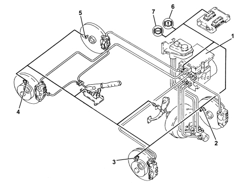
1. ABS/EBD control unit
2. Left front wheel sensor
3. Right front wheel sensor
4. Right rear wheel sensor
5. Left rear wheel sensor
6. EBD warning light
7. ABS warning light
Specifications
The ABS control unit implements the ABS and EBD functions.
The ABS control unit is connected to the front wiring, the system cable loom is incorporated with the engine compartment cable loom.

|
The pin out of the ABS control unit with EBD is different from control units with ASR and VDC functions. |
Composition
The ABS consists of:
- an electronic control unit integrated with the electrohydraulic control unit;
- an electrohydraulic control unit that modulates braking pressure by means of eight solenoids, two for each wheel
- four active sensors that detect the angular rotation speed of the wheels;
- wiring with specific connector.
Operation
Introduction
The electronic control unit processes signals from the active sensors and from the brake light control switch. It identifies the wheel or wheels with a tendency to lock (maximum slip between wheel and road surface) by means of the control unit software and modulates the brake fluid pressure selectively for the front wheels and in tandem for the rear wheels (select-low function).
The ABS modulates brake pressure in accordance with three basic stages:
- pressure maintenance stage;
- pressure reduction stage;
- pressure increase stage.
If operation is requested, the ABS stays active at speeds greater than 2.7 km/h. After that, it cuts out to allow the car to stop. After each key ON and when a speed of 6 km/h is exceeded, the control unit carries out an operation check on the solenoids and pump motor. The control unit also tests the sensors when a speed of 12 km/h is exceeded.
Operating logics
PRESSURE INCREASE STAGE WITHOUT ABS OPERATION
When the brake pedal is pressed, the electronic control unit (1):
- does not supply the pressurizing solenoid (N.A.) (2)
- does not supply the discharge solenoid (N.C.) (3).
The pressure generated by the brake pump (4) therefore reaches the brake calipers (5) without undergoing changes.
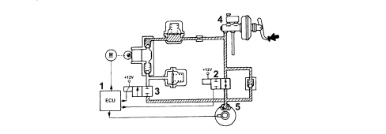
EXAMPLE OF ABS OPERATION
Pressure maintenance stage
The electronic control unit (1):
- supplies the pressurizing solenoid (N.A.) (2);
- does not supply the discharge solenoid (N.C.) (3).
Therefore the hydaulic connection between the brake pump (4a) and the brake caliper (5) is broken.
The pressure in the brake caliper (5) remains constant even when pressure on the brake pedal is increased.
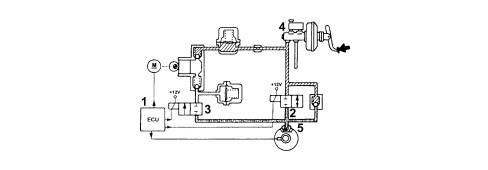
Pressure reduction stage
The electronic control unit (1):
- supplies the discharge solenoid (N.A.) (2);
- supplies the discharge solenoid (N.C.) (3).
The hydraulic connection between the brake pump (4) and the brake caliper (5) is broken and the discharge solenoid (3) opens and brings the brake caliper (5) into communication with the low pressure accumulator (6) and scavenger pump (7).
The electronic control unit (1) also supplies the motor (8) controlling the scavenging pump (7) to restore the fuel taken to the brake caliper (5) to the main circuit.
The fluid flows through the high pressure accumulator (9) and the restriction (10) that performs a damping function.
The system is equipped with a check valve (11) fitted in parallel with the pressurizing solenoid (2) that allows a fast reduction of pressure in the brake caliper (5) during brake pedal release.
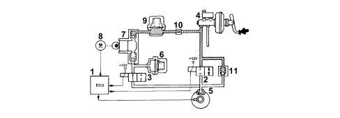
Pressure increase stage
The electronic control unit (1).
- does not supply the pressurizing solenoid (N.A.) (2);
- does not supply the discharge solenoid (N.C.) (3).
The fluid taken into the main circuit is then free to return to the brake caliper (5) and increase the pressure acting on the brake caliper.
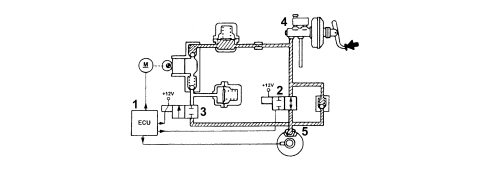
EBD FUNCTION (Electronic Brake-Force distribution)
The EBD function controls the distribution of brakeforce and therefore replaces the conventional mechanical load proportioning valve to allow:
- independent action on the rear brake calipers;
- improved brakeforce distribution;
- optimum performance in all load conditions (static or dynamic), driving conditions (in a straight line or cornering) and when the vehicle is in any state of repair (worn tyres, brakes or suspension);
- implementation of a strategy that follows the ideal distribution curve.
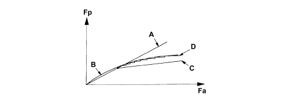
Fa - Front axle brake force
Fp - Rear axle brake force
A - Distribution curve implemented by the braking system
B - Ideal distribution curve
C - Distribution curve implemented by a conventional hydraulic load proportioning valve
D - Distribution curve implemented by the EBD function
EBD function failure is indicated by the simultaneous activation of:
- ABS warning light;
- low brake fluid and/or handbrake on warning light.
Under these conditions, the car must be driven with extreme caution to the nearest authorised workshop to check the system.
RECOVERY
The electronic control unit is equipped with a safety circuit that monitors ABS efficiency.
With the ignition key inserted, the safety circuit carries out an initial auto test for 4 seconds to check:
- electronic control unit operation;
- solenoid operation.
Every time the car starts off from a standstill, the safety circuit checks for signals from the active sensors.
When the car is in motion, the safety circuit works as follows:
- continually compares angular wheel speed with the calculated reference speed;
- checks memory conditions;
- checks operation of both relays, the solenoids and the pump motor;
- constantly monitors battery voltage;
- monitors the efficiency of the brake pedal switch.
If the safety circuit detects one or more faults in system components during the check stage, the safety circuit operates as follows:
- deactivates the ABS while still guaranteeing operation of the conventional braking system;
- indicates the fault status to the driver by turning on a warning light in the control panel.
BRAKE VACUUM SYSTEM - For the 3.2 JTS version only
Due to its operational characteristics, the 3.2 JTS version of the engine, under the following conditions:
- after cold starts;
- while warming up;
- with the climate control system in operation,
generates a minimal vacuum in the brake servo caused by the greater throttle opening.
Description
The brake servo vacuum circuit is equipped with a by-pass that incorporates two single-acting valves (5) and (7) that operate due to the pressure differences (P1) and (P2) present upstream and downstream of the throttle body.
At the level of the valve (5), the pipe contains a constriction (6) to take advantage of the Venturi effect.
The brake servo (9) is fitted with a brake servo minimum vacuum sensor (8) that indicates the vacuum present in the brake servo to the engine management unit.
Operation
With the engine cold or with additional loads, the air flows through the by-pass and communicates with the brake servo by means of the single-acting valve (5) and the presence of the constriction increase the vacuum that removes air from the brake servo.
With the engine hot and without additional loads, the vacuum in the intake manifold is equal to or higher than 600 mb (ideal value) as a result of which the brake servo air is extracted towards the valve (7).
If the brake pedal is pressed repeatedly in close succession and especially if the throttle is open, the brake servo vacuum may decrease below the level of - 290 mb.
At this point, the brake servo minimum vacuum sensor (8) cuts in and send an electrical signal to the engine management control unit. Having received the signal (1.5 - 5 Volt), the control unit processes the signal, transforming it into a physical vacuum value and intervenes by deactivating:
- the air conditioner,
- the stratified engine operating mode,
pressure in the brake servo therefore increases to guarantee service for at least three repeated presses of the brake pedal.
Fault diagnosis
Once it has received the signal, the engine control unit performs an electrical diagnosis.
Once it has detected a sporadic error, it cuts in to temporarily deactivate the air conditioner and and the stratified engine operation mode.
When it detects a validated error (i.e. one that has occurred at least three times) caused by an open circuit or a short circuit to battery/earth, it enters STOP mode, i.e. it finally deactivates the air conditioner and the stratified engine operation mode until the fault is repaired.
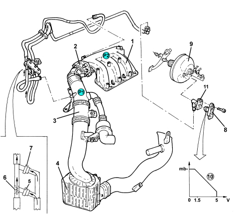
1. Intake manifold
2. Throttle body
3. Air flow meter
4. Air filter
5. Single-acting valve
6. Restricter
7. Single-acting valve
8. Brake servo minimum vacuum sensor
9. Brake servo
10. Graph showing signal conversion to a vacuum value
11. Connector
ASR TRACTION CONTROL/ADJUSTMENT DEVICES
In addition to the ABS EBD system, the vehicle is also equipped with a system for controlling the stability of the vehicle VDC which includes the ASR traction control system.
The VDC system, in particular, thanks to slewing sensors and steering wheel angle sensors, guarantees the monitoring of the dynamics of the entire vehicle thereby improving active safety.
View of assembly
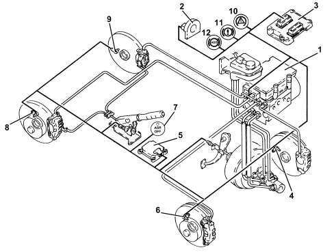
1. ABS/VDC control unit
2. Steering angle sensor
3. Engine management control unit
4. Left front wheel sensor
5. Slewing/lateral acceleration sensor
6. Right front wheel sensor
7. ASR off button with warning light
8. Right rear wheel sensor
9. Left rear wheel sensor
10. VDC warning light
11. EBD warning light
12. ABS warning light
Specifications
Driving a vehicle in all conditions where the physical limits of grip and, consequently, stability may be reached can be a difficult task for the average driver. Therefore, in order to further improve safe driving conditions, an electronic system capable of assisting the driver with this difficult task is available.
The systems currently employed to ensure safer driving in particular conditions are mainly the A.B.S. which controls braking and the systems which control traction during acceleration through action on the brakes (T.C.) and traction/drive torque during acceleration and release through action on the brakes and on the engine control system motorized throttle (A.S.R./M.S.R.).
The VDC system includes all the above listed functions ensuring optimum dynamic control of the vehicle with the addition of specific sensors:
- steering angle sensor on the steering wheel;
- slewing/lateral acceleration sensor at the centre of gravity under the centre console.
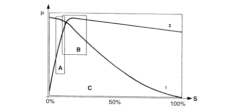
μ - Wheel grip
S - Slip
A - EBD intervention area
B - ABS intervention area
C - VDC intervention area
1 - Lateral force curve
2 - Longitudinal force curve
As can be seen from the grip/slipping diagram, the area covered by the VDC system is larger than that covered by a conventional ABS/EBD system.
The VDC system cannot be switched off as it is a safety system; the A.S.R./M.S.R. function, on the other hand, can be switched off via the button in the centre console.
|
|
To ensure the drive of the vehicle (drive wheels) with snow chains fitted or in particular road surface conditions (snow, ice, deep mud, sand or gravel) it is advisable to switch the A.S.R. off. |
The intervention of the VDC system is signalled by a special warning light in the instrument panel node.
Composition
The VDC system consists of:
- an electro-hydraulic/electronic A.B.S. control unit (with an VD logic);
- interface with the C-CAN line, resident in the ABS control unit for communication with the engine control unit, steering angle sensor and lateral acceleration sensor;
- Magnetic-resistive type wheel speed sensors;
- steering angle sensor with CAN interface (steering angle sensor);
- slewing/lateral acceleration sensor in one piece integral with the CAN interface;
- brake fluid pressure sensor incorporated in the ABS control unit;
- ABS-EBD-VDC warning light in the instrument panel controlled via the dedicated serial line;
- ASR off switch with a warning light in the button.
Operation
The VDC continuously recognizes a loss in grip for the wheels, both longitudinal and transverse, in all driving conditions from braking to acceleration in order to ensure the direction and the stability of the vehicle.
The management of the VDC system is entrusted to the ABS electronic control unit, integrated with a special electrohydraulic control unit, that allows action on the braking system independently of the action of the user.
The control unit processes the following signals:
- steering wheel rotation angle;
- lateral acceleration and slewing;
- engine operating conditions;
- wheel rpm;
- hydraulic braking system pressure
and uses special algorithms in the electronic control unit software to obtain the figures for the dynamic control of the vehicle:
- longitudinal and transverse sliding between the wheels and the road surface;
- axle drift.
Using these figures the system interprets the effective dynamics of the vehicle; having identified all the critical conditions due to environmental factors (e.g. surface with poor grip) or any errors made by the user (e.g. panic situations) and with subsequent intervention on the brakes and the drive torque, the vehicle is restored to good driving conditions.
The system interfaces with:
- NCM for drive torque adjustment via the C-CAN line;
- control panel via a serial line for warning light control.
The system is combined with a power unit with a specific brake pump; in addition, the pipes between the brake pump and the ABS control unit have a Titaflex insert because the diameter of the pipe (6mm) is larger than regular pipes (4 mm); this is designed to prevent adverse effects on the operation of the VDC at low brake fluid temperatures.
There is a dedicated line (line K) for the diagnosis of the system:
The VDC system switches on automatically when the vehicle is started up and cannot be switched off by the user; the button in the centre console only switches off the ASR function and only when advisable.
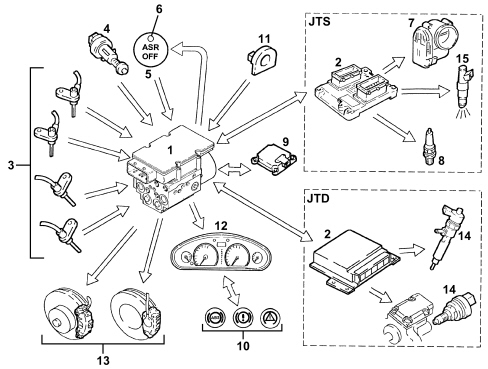
INPUT SIGNALS:
- wheel speed sensors (from direct line) (3);
- three stage normally open brake pedal switch (from direct line) (4);
- ASR off button (from direct line) (5);
- engine control unit (2) (from C-CAN line);
- throttle angle position (7) (from C-CAN line) (only for JTS);
- control panel (12);
- warning light status signal (from dedicated serial line) (10);
- slewing sensor (rotation of vehicle on vertical axis) (from C-CAN line) (9);
- lateral acceleration sensor (from C-CAN line) (9);
- steering angle/steering wheel rotation sensor (from C-CAN line) (11);
- hydraulic system pressure sensor (from direct line) (1).
OUTPUT SIGNALS:
- brake pressure modulation control (13);
- ignition advance reduction control (from C-CAN line) (8) (only for JTS);
- engine power management control (from C-CAN line) (7) (only for JTS);
- injection time management control (from C-CAN line) (15) (only for JTS);
- engine power management control (from C-CAN line) (14) (only for JTD);
- VSO signal (vehicle speed) (12);
- VDC/ASR-ABS-EBD warning light control in panel (from dedicated serial line) (10);
- ASR off LED (6).
Operating logics
In addition to controlling the slipping of the vehicle in a lengthwise direction, the VDC system also controls slipping in a sideways direction and, as a result, controls the lateral stability of the vehicle.
The lateral stability of a vehicle is the result of the reaction of the tyres to lateral forces due to increased centrifugal force.
The action of the lateral forces produce a variation in the drift angle of the wheels and, consequently, a variation in the axle drift (drift angle = difference between the desired route and the effective route).
The lateral forces do not, however, act equally on all four wheels because they are not all subject to the same load conditions; in effect the load on the wheel differs depending on the situation the wheel is in, namely:
- acceleration (lightening of the front axle and loading of the rear axle);
- braking (loading of the front axle and lightening of the rear axle);
- cornering to the right/left (loading or the outer wheels and lightening of the inner wheels);
- accelerating/decelerating round a bend (combination of the cases mentioned above).
It is obvious that if the lateral forces acting on the individual wheels vary, there will also be a variation in the forces acting on the vehicle axles; consequently the lateral forces acting on the front axle overcome those on the rear axle and viceversa determining a rotation (moment) on the vehicle axis of the vehicle (slewing axis).
The yaw moment affects the behaviour of the vehicle, producing either understeer or oversteer.
Understeer for a vehicle is when, with increasing lateral acceleration, the drift angle for the front axle increases greatly compared with that of the rear axle. When this happens, the vehicle tends to go straight ahead (taking the bend wide) when cornering.
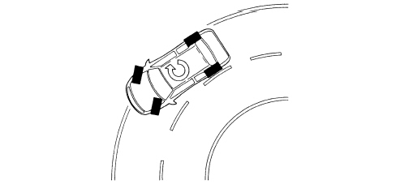
Oversteer for a vehicle is when, with increasing transverse acceleration, the drift angle for the rear axle increases greatly compared with that of the front axle. In this case the vehicle tends to turn around on itself (the rear axle tends to go straight, therefore the vehicle "hugs" the bend).
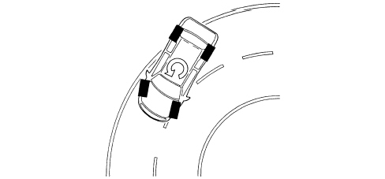
In order to keep the effect of lateral forces under control and limit the slewing moment, the ABS control unit must firstly calculate the behaviour of vehicle set by the driver using:
- steering wheel angle sensor;
- accelerator pedal position;
- brake circuit pressure;
after which the control unit should check the actual behaviour of the vehicle through:
- the wheel sensors (vehicle speed/wheel speed);
- lateral acceleration sensor;
- slewing sensor.
The control unit is capable of:
- detecting actions carried out by the user, in effect, through the position of the steering wheel it checks the number of degrees (wide radius or narrow radius bends) and the speed for rotating the steering wheel (sharp or gentle rotations) and, using the position of the throttle and the brake pressure when accelerating or braking, how the user is taking the bend or deviating from the straight path.
- detecting the actual behaviour of the vehicle given the environmental variables, e.g. slippery surface, reaction of the vehicle to incorrect manoeuvres by the user, etc., in order to identify the moment of slewing and the lateral sliding of the axles via the sensors on the four wheels and the slewing/lateral acceleration sensor.
These two operations are necessary to superimpose the mathematical model mapped in the control unit on the effective behaviour of the vehicle in order to identify the state in which the vehicle is in (understeer or oversteer) and decide the action for the brakes and the engine.
UNDERSTEER ON CORNERS
The control unit verifies the presence of understeer (mainly from the drift of the front axle), corrects the behaviour of the vehicle, braking the inner wheels round the bend in order to create an opposing moment which will lead the vehicle towards the centre of the bend and, possibly, reducing the drive torque.
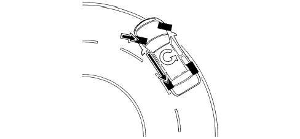
OVERSTEER ON CORNERS
In the presence of understeer (mainly from the drift of the rear axle) the control unit corrects the behaviour of the vehicle, braking the outer front wheel round the bend in order to create an opposite slewing moment, if necessary increasing the drive torque.
|
|
The system intervenes before the oversteer and understeer values are too high in order to limit the corrective measures that have to be taken, which could make handling difficult. |
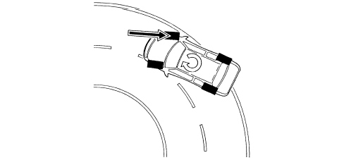
ABRUPT VARIATIONS FROM A STRAIGHT PATH (SLALOM/OVERTAKING)
In the event of sharp variations from the path (e.g. overtaking, slalom), the control unit identifies possible oversteer and understeer conditions and corrects the path of the vehicle, acting as described in the cases mentioned previously.
ABRUPT VARIATION FROM A STRAIGHT PATH (DRIVING OVER DIFFERENT SURFACES)
The control unit is capable of detecting deviations in the path and the prevalence of axle drift, correcting the path through suitable action on the brakes and the engine.
ABRUPT ACCELERATION/DECELERATION
The control unit uses the ASR/MSR strategy also controlling the lateral acceleration of the vehicle and, as a result, regulating the action on the front and rear brakes and on the engine torque in a more complete way than on vehicles with ASR only.
INTERVENTION - INTERVENTION TIMES IN CONDITIONS WHERE ROAD SURFACE GRIP IS GOOD (ASPHALT)
For JTS versions:
Engine torque reduction by the engine management control unit through the alteration of the ignition advances, 6/100 of a second after the slipping limit is exceeded.
A further reduction in torque through a decrease in the throttle opening (by the engine management control unit through the motorized throttle body) after 15/100 of a second.
Intervention of the hydraulic system (braking force on the drive wheels) after 2/10 of a second.
For JTD versions:
Torque reduction via the engine control unit by reducing the fuel flow rate, after 6/100 second.
Intervention of the hydraulic system (braking force on the drive wheels) after 2/10 of a second.
OPERATION IN POOR GRIP CONDITIONS
The system is capable of recognizing these conditions by comparing the acceleration of the drive wheels with the torque transmitted by the engine (engine load from the engine management control unit).
The system behaves in the same way as for both drive wheels slipping in good road grip conditions (asphalt) and the intervention levels are at the lower limit.
ONLY ONE DRIVE WHEEL SLIPPING
Intervention - intervention times
For JTS versions:
Torque reduction by the engine management control unit through the alteration of the ignition advances, 6/100 of a second after the limit is exceeded.
A further reduction in torque through a decrease in the throttle opening (by the engine management control unit through the motorized throttle body) after 15/100 of a second.
Intervention of the hydraulic system, a braking action exerted on the wheel that it slipping to guarantee a resistive force on the side with poor grip (TC). This resistive force allows the differential to transmit an equal torque with good grip.
For JTD versions:
Torque reduction via the engine control unit by reducing the fuel flow rate, after 6/100 second.
Intervention of the hydraulic system, a braking action exerted on the wheel that it slipping to guarantee a resistive force on the side with poor grip (TC). This resistive force allows the differential to transmit an equal torque with good grip.
REGULATION OF ENGINE BRAKING TORQUE DURING OVER-RUN (MSR)
Vehicle instability during deceleration in poor grip conditions
The system recognizes this condition from the engine load, from the speed of the front and rear wheels and from the brake pedal sensor. In this case there is an increase in drive torque through the intervention of the engine management control unit opening the motorized throttle (petrol versions) or fuel flow (JTD versions) to overcome the natural instability of the vehicle due to the engine braking torque in poor grip conditions.
ASR CUT-OUT
If the ASR/MSR is cut out, the following functions remain activated:
- ABS/EBD;
- TC up to a speed of 40 km/h;
- VDC.
CUT-IN THRESHOLDS
The different intervention levels between 2 and 6 km/h depend on environmental factors; some of the conditions have been described in the operating logics, others are:
- high acceleration level, high level thresholds;
- vehicle speed;
- tyre type (normal or winter). With winter tyres and good grip, high level thresholds; with winter tyres and low grip, thresholds are low. The system is capable of recognizing these conditions by comparing the acceleration of the drive wheels with the torque transmitted by the engine (engine load from the engine management control unit).
|
|
The ASR function is activated in all vehicle speed conditions, however, the intervention of the brakes is excluded above 40 km/h. |
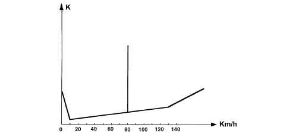
VDC intervention display
The intervention of the VDC system is displayed by the dedicated warning light in the instrument panel flashing (5 Hz d.c. 50%).
|
|
The VDC system improves driving safety, but there are limited situations which cannot be controlled by the VDC system, therefore it is not seen as a device which improves the performance of the vehicle but as a device that improves the safety of the vehicle. |
DIAGNOSTIC FUNCTIONS
The ABS control unit is capable of carrying out the autodiagnosis of the system and, in the case of a fault, can:
- deactivate the entire system;
- partly deactivate the system.
|
System status |
ASR warning light on button |
EBD warning light in NSQ |
ABS warning light in NQS |
VDC warning light in NQS |
HH warning light in NQS |
|
|
Check (4s) |
EBD/ABS/ASR VDC/HH OFF for the first 500 ms |
ON |
ON |
ON |
ON |
ON |
|
Whilst driving |
EBD/ABS/ASR VDC/HH ON |
OFF |
OFF |
OFF |
OFF |
OFF |
|
ASR turned off from key |
EBD/ABS/HH ESP ON ASR OFF |
ON |
OFF |
OFF |
OFF |
OFF |
|
EBD faulty |
EBD/ABS/ASR /VDC/HH OFF |
ON |
ON |
ON |
ON |
ON |
|
ABS faulty |
EBD ON ABS/ASR/VDC OFF HH ON/OFF |
ON |
OFF |
ON |
ON |
ON |
|
ASR faulty |
EBD/ABS ON ASR/VDC OFF HH ON/OFF |
ON |
OFF |
OFF |
ON |
ON/OFF |
|
HH faulty |
EBD/ABS/ ASR/VDC ON HH OFF |
OFF |
OFF |
OFF |
OFF |
ON |
|
VDC faulty |
EBD/ABS/ASR ON VDC OFF HH ON/OFF |
OFF |
OFF |
OFF |
ON |
ON/OFF |
|
Insufficient brake fluid level or parking brake on |
EBD/ABS/ASR/ VDC/HH ON |
OFF |
ON |
OFF |
OFF |
OFF |
|
ASR/VDC activated |
EBD/ABS/ASR/VDC /HH ON |
OFF |
OFF |
OFF |
Intermittent 4Hz d.c. 50% |
OFF |
|
HH in action |
EBD/ABS/VDC/HH ON |
OFF |
OFF |
OFF |
OFF |
ON |
Operation of warning lights
The ABS control unit activates the warning lights according to the following logic:
- with the VDC on, the warning light in the panel is off and the warning light in the ASR button is off;
- with ASR off, the VDC warning light on the control panel is off and the warning light on the ASR button is on;
- with the VDC activated, the warning light in the panel flashes and the warning light in the button is off;
- when the VDC is faulty, the warning light in the control panel is on.
|
|
As the system is connected to the C-CAN line it has a diagnostic line known as line K. The diagnosis of the system can be carried out using the diagnostic equipment connected to the diagnostic socket. |
Description of components
HYDRAULIC SYSTEM OPERATION
The electr-hydraulic unit on the version equipped with VDC has 4 additional solenoid valves.
When the (normally closed) intake solenoid valve is activated, the additional quantity of fluid required to increase the pressure and brake the wheel(s) can be received.
When the (normally open) pilot solenoid valve is activated, the modulated pressure produced by the supply pump can be maintained in the circuit.
When the ESP system is not intervening, the electronic control unit:
- does not activate the (N.C.) intake solenoid valve (2).
- does not activate the (N.A.) pilot solenoid valve (3).
In this way the system operates during the following stages:
- pressure increase;
- pressure maintenance;
- pressure reduction;
- pressure increase and resupply.
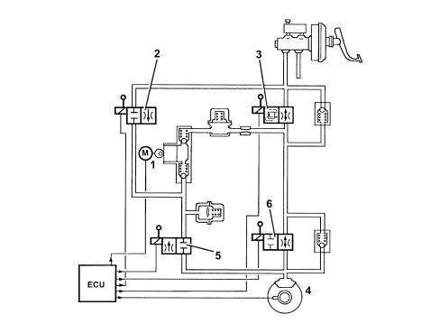
During the intervention of the VDC system, the electronic control unit:
- activates the hydraulic pump (1);
- activates the (N.C.) intake solenoid valve (2);
- activates the (N.A.) pilot solenoid valve (3).
Therefore the pressure produced by pump (1) reaches the brake caliper and is modulated, on the request of the electronic control unit, by the discharging solenoid (5) and the pressurizing solenoid (6).
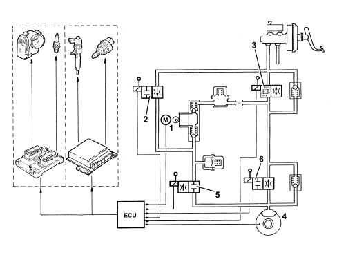
E-Q2 SYSTEM (for M.Y. ''08 versions only)
The Electronic Q2 system is a device incorporated in the VDC stability control system which allows the almost continuous transmission of torque to the wheels depending on the grip, speed and lateral acceleration of the vehicle by means of the local intervention of the braking system.
This function makes it possible to intervene on the braking of the individual wheel that is losing grip in a gentle and proportional manner, allowing the optimum transfer of torque to the wheel for the best compromise between drive (understood as an increase in speed) and maintaining the set path.
The possibility of modulating the intervention of the E-Q2 system is managed according to the driver''s request through the position of the accelerator pedal, the gear engaged, the engine speed and the difference in slipping between the wheels.
The effect on the vehicle perceived by the driver is similar to the intervention of the Q2 front differential; the moment the inner wheel is slipping, for example whilst accelerating through a bend, the E-Q2 system brakes the inner wheel slightly to assist the transfer of torque to the outer wheel and maintain the set path and speed.
The operation is perceptible as long as the available grip at the outer wheel is sufficient; when this wheel also starts to slip the operation of the ASR cuts in with the cut off of engine torque and/or action at the brakes.
The E-Q2 system operates independently of the VDC even though it is part of the same stability control system: the VDC intervenes to control excessive oversteer or understeer when slewing is detected in the absence of drive and in the presence of excessive steering wheel angles.
The E-Q2 system is also fitted on 4x4 versions thereby producing the performance of an electronically controlled rear self-locking differential.
Operating examples
Vehicle cornering
When cornering in poor grip conditions or driving aggressively, the inner wheel often experiences a loss of grip. From the moment in which the ground torque is reduced for the inner wheel as a result of the lightening of the suspension due to the transfer of the lateral load, the conventional differential (which distributes the same torque to both wheels) transfers an equal torque value to the outer wheel which is insufficient for good traction.
There are two possible responses in this situation depending on how the vehicle is equipped. On vehicles without ASR-VDC the perceived result is the slipping of the inner wheel, a loss in control of the vehicle (strong understeer) and a lack of acceleration when coming out of the bend. If, on the other hand, the vehicle is equipped with ASR-VDC, there is a reduction in engine power, intervening on the throttle valve and acting on the braking system thereby making it impossible to modulate the accelerator resulting in an unpleasant sensation of a loss of power.
In both cases the result is the sensation of being "stationary" when coming out of the bend.
Where the E-Q2 system is fitted, the moment the inner wheel starts to lose grip, the torque is partly transferred to the outer wheel, by slight braking of this wheel, guaranteeing less understeer, greater stability and a higher speed when cornering.
Ground with poor grip conditions
When driving over ground with poor grip conditions the drive wheels often experience different grip conditions.
In these particular situations, setting off or sharp acceleration could cause the wheel in critical friction conditions to slip with a serious reaction at the steering wheel, unsuitable take off and the need to make continuous corrections through the steering wheel to maintain the path.
Where the E-Q2 system is present these negative effects are opposed thanks to the gentle braking of the wheel losing grip and the gradual transfer of torque to the wheel that can exploit the increased friction coefficient. This makes hill starts simpler and driving on roads where the surface conditions change frequently safer and more comfortable.
DESCRIPTION OF COMPONENTS
Electrohydraulic unit
The electrohydraulic unit consists of an electronic control unit and an electrohydraulic control unit.
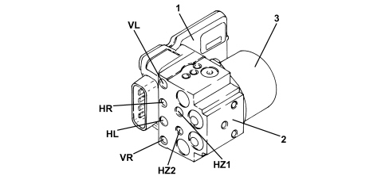
1. Electronic control unit
2. Electrohydraulic control unit
3. Recovery pump assembly
Electronic control unit
The electronic control unit carries out the following functions:
- acquiring data coming from the wheel rpm sensors;
- memorises the control parameters defined during the vehicle P.D.I.;
- memorises the control software;
- processes the data acquired;
- controls the braking process;
- detects faults in the braking system components;
- memorises the fault codes and activates the ABS-EBD-VDC/ASR warning lights;
- transmits and receives data via the diagnostic connector;
- converses with the engine management control unit;
- controls the ASR/MSR/VDC process;
- transmits and receives data via the C-CAN line.
PIN OUT
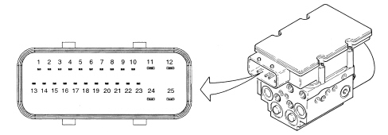
1 - CAN-L line
2 - CAN-H line
3 - ASR switch off
4 - ASR warning light off
5 - Not connected
6 - Diagnosis
7 - Right front sensor positive
8 - Right front sensor sensor negative
9 - Right rear sensor positive
10 - Right rear sensor negative
11 - Signal earth
12 - Supply
13 - CAN-L line
14 - CAN-H line
15 - Not connected
16 - VSO (vehicle speed)
17 - Brake warning light switch
18 - Serial WL (control panel warning light serial)
19 - Left front sensor positive
20 - Left front sensor negative
21 - Left rear sensor positive
22 - Left rear sensor negative
23 - VIGN (+ 5 starting)
24 - Pump earth
25 - Pump supply
Electrohydraulic control unit
It performs the function of modulating the pressure of the fluid at the brake calipers via solenoids, with the following operating stages:
- brake fluid pressure increase;
- brake fluid pressure maintenance;
- brake fluid pressure decrease.
|
|
The electrohydraulic control unit is available from the Parts Dept. filled with fluid; take care not to remove the protective caps or turn it upsidedown whilst moving it. |
|
|
A sensor is fitted on the electrohydraulic control unit for monitoring the pressure of the brake; this sensor is supplied together with the hydraulic unit so it cannot be replaced individually. |
The electrohydraulic control unit consists of:
- twelve 2-way solenoid valves;
- a dual circuit scavenging pump.
- two low pressure accumulators;
- two high pressure accumulators;
- brake fluid pressure sensor.
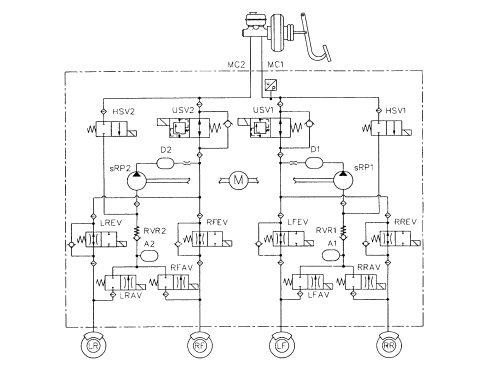
Steering sensor
The steering angle sensor has the task of measuring the angles in degrees and the rotation speed of the steering wheel and making these figures available via the C-CAN (steering angle sensor node).
The sensor is built into the steering wheel stalk unit and cannot be replaced individually.
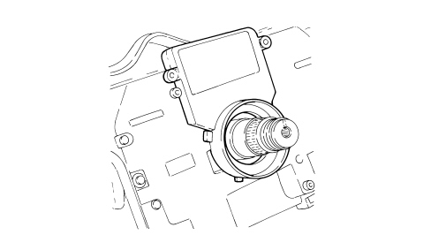
The sensor measures the following via internal electronics:
- the angular position of the steering column;
- the rotation speed of the steering column.
This information is processed directly by the sensor and is made available at the brake node via the C-CAN.
The sensor has a range of -720° ÷ +720° and a resolution of 0.7°.
The sensor must be zeroed in relation to the position of the steering wheel in order to work properly. This is carried out as follows:
- turn the ignition key to the OFF position or extract it;
- re-insert the key and start the engine;
- turn the steering wheel (even with the vehicle stationary) through 1/2 turn to the left;
- turn the steering wheel (even with the vehicle stationary) through 1/2 turn to the right;
- drive a short section in a straight line (wheels straight) for at least 100 metres and at a speed over 8 km/h until the warning light goes off.
The sensor has an autodiagnostic function and can carry out a plausibility check on the information processed.
Lateral acceleration/yaw sensor
The two yaw and lateral acceleration sensors are designed to measure rotation of the vehicle on the vertical axis (yaw) and lateral acceleration.
Connection to the ABS control unit is via the CAN line.
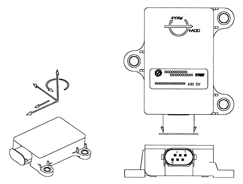
The sensor has the following functional specifications:
Supply voltage:
- minimum value 6.0 V
- maximum value 21.5 V
- nominal value 12 V
Operating temperature:
- minimum value -40°C
- maximum value +85°C
Current uptake at 12 V:
- nominal value 50 mA
Lateral acceleration sensor:
- measurement range ± 1.5 g
The sensor consists of a plastic casing that houses the sensitive elements which detect slewing and lateral acceleration and the electronic management.
The sensor has a connector with six pins, all of which are connected.
The sensor is located at the centre of gravity, on the tunnel between the two front seats.
The sensor receives a direct power supply from the battery and, simultaneously, provides the yaw and acceleration signal to the ABS control unit via the CAN line.
Active sensors
The adoption of active sensors offers the following advantages:
- less sensitivity to the distance between the sensor and the magnetic ring (gap);
- a reduction in sensitivity to electro-magnetic interference;
- a saving in weight and size;
- a simplification of the transmission couplings through the elimination of the phonic wheels.
The active sensors consist of two fundamental components:
- a multipolar magnetic coder (1) built into the bearing of the wheel hub bearing with controls;
- a magnetic-resistance receiver (2) facing the codifier.
FRONT SENSORS
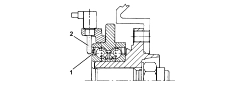
REAR SENSORS
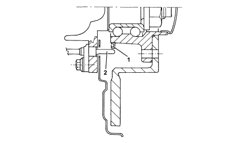
The active sensor operates according to the variation in the internal electrical resistance according to the intensity and direction of the lines of force of an external magnetic field (multipolar magnetic codifier) producing a variable square wave signal whose frequency varies according to the rotation speed of the wheel, but with a constant amplitude.
The active sensor is therefore a proximity sensor with a built-in electronic system, connected by means of a cable to the ABS control unit, from which it receives an electrical supply and to which it transmits the speed of the vehicle.
The flywheel is a multipolar ring, an elastomer with a certain quantity of magnetic particles which, by means of a special magnetization technique, are orientated to produce different magnets with alternate North South poles in a circumference arrangement.
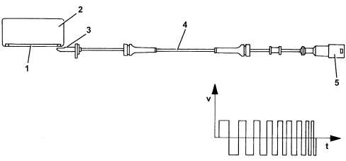
Asr on/off button
It has the task of switching the ASR/MSR system off and has an LED.
The button 1) is integral with the central console.
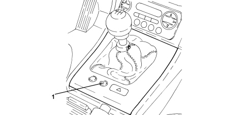